UNIVERSAL STUDIOS
Entrance

Universal Studios Japan merupakan salah satu tempat hiburan yang paling disukai di dunia, menempati peringkat ke-3 dan sedikit di atas Tokyo Disneyland serta di antara tempat hiburan global lainnya. Universal Studios Japan yang terletak di Osaka, Jepang, merupakan Universal Studios pertama yang dibangun di luar Amerika Serikat dan yang pertama di Asia, yang dibuka pada tahun 2001, dan mulai ramai dikunjungi pada tahun 2022.
Universal Studios Japan atau yang biasa disingkat sebagai USJ merupakan taman hiburan yang menawarkan berbagai pengalaman menarik bagi pengunjung dari berbagai usia. Taman hiburan ini memiliki berbagai zona yang dibuat berdasarkan film, karakter, dan cerita populer dari Universal Studios. Setiap zona memiliki suasana, dekorasi, serta atraksi yang berbeda sehingga pengunjung dapat merasakan pengalaman seolah-olah berada di dalam dunia film yang mereka kenal. Hal tersebut menjadi salah satu alasan mengapa USJ menjadi tempat wisata yang menarik bagi wisatawan lokal maupun wisatawan dari berbagai negara.
Salah satu area yang paling terkenal di Universal Studios Japan adalah Super Nintendo World. Area ini membawa pengunjung ke dalam dunia permainan Nintendo dengan berbagai karakter dan elemen yang sudah dikenal oleh banyak orang. Selain itu, terdapat juga The Wizarding World of Harry Potter yang menghadirkan suasana seperti berada di dunia sihir dalam film Harry Potter. Pengunjung dapat menikmati berbagai atraksi, bangunan, dan suasana yang dibuat secara detail sehingga memberikan pengalaman yang berbeda dari taman hiburan pada umumnya.
Keunikan Universal Studios Japan tidak hanya terletak pada banyaknya atraksi, tetapi juga pada kemampuannya menggabungkan teknologi, kreativitas, dan cerita dalam satu tempat. Lingkungan yang dibuat secara detail membuat pengunjung tidak hanya datang untuk menaiki wahana, tetapi juga untuk menikmati suasana dan mengambil foto. Oleh karena itu, Universal Studios Japan menjadi salah satu destinasi wisata yang menarik untuk dikunjungi ketika berada di Osaka, terutama bagi orang-orang yang menyukai film, permainan, dan pengalaman hiburan yang interaktif.
 Super Nintendo World
Minion Park
The Wizarding World of Harry Potter
Amity Village
Jurassic Park
Newyork
Hollywood
Super Nintendo World
Minion Park
The Wizarding World of Harry Potter
Amity Village
Jurassic Park
Newyork
Hollywood
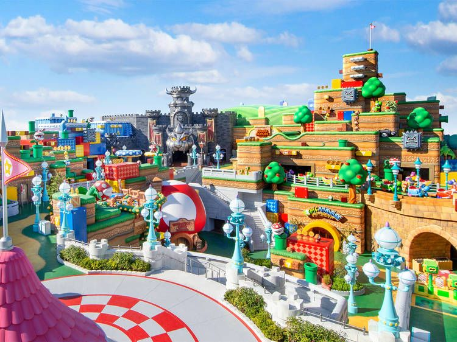
Super Nintendo World menciptakan kembali dunia Mario di dalam taman dan merupakan yang pertama di dunia yang sejenis. Super Nintendo World ini sengaja dibangun menyerupai dunia di game Mario. Area ini menyatukan banyak adegan ikonik dari gim Mario, dari Kastil Bowser hingga Koopa Troopas, kura-kura kuning bercangkang hijau yang merupakan musuh klasik Mario. Karakter, properti, dan latar tempatnya sungguh megah dan sangat menggemaskan.
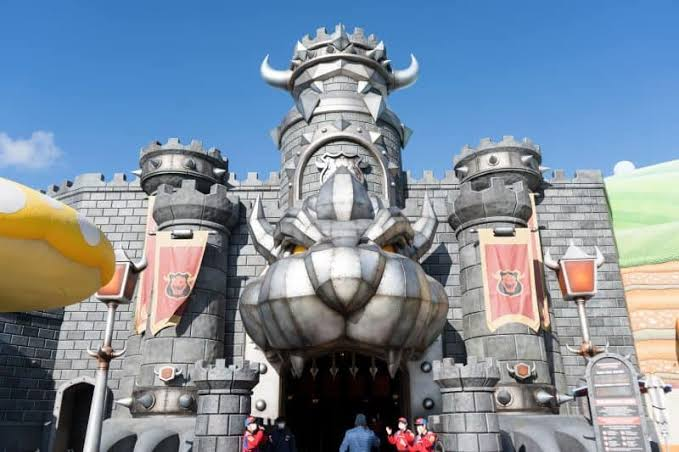
Sebuah atraksi balap futuristik yang membuat Anda merasa seperti telah memasuki game Mario Kart 8 yang populer. Keseruan dimulai tepat di pintu masuk, di mana wajah Bowser yang besar dan nakal terbuka lebar seperti sebuah gerbang, seolah-olah dia berkata, “Masuklah. Aku menantangmu.”
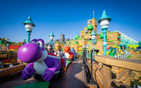
Wahana lain di dalam Super Nintendo World, dan wahana ini sangat cocok untuk bayi dan anak kecil. Yoshi's Adventure adalah wahana kereta api bertema Yoshi. Yoshi, dinosaurus hijau dari gim Mario, adalah salah satu sekutu lama Mario. Wahana ini memungkinkan kita duduk di kereta dan bepergian bersama Yoshi untuk mencari peta Kapten Toad, yang akan memandu kita menuju perburuan harta karun.
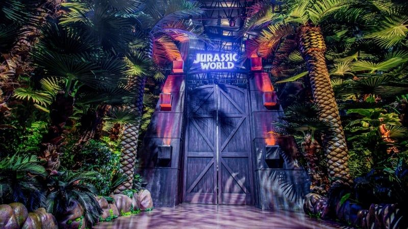
Zona ini merekonstruksi adegan dan dinosaurus dari film Jurassic Park, memungkinkan kita memasuki dunia prasejarah yang dikelilingi hutan dan berbagai spesies dinosaurus. Sebagian besar atraksi di area Jurassic Park didasarkan pada film-film tersebut, termasuk atraksi terkenal The Flying Dinosaur, sebuah roller coaster dinosaurus yang membalikkan Anda dengan posisi wajah menghadap ke bawah di udara dengan kecepatan tinggi.
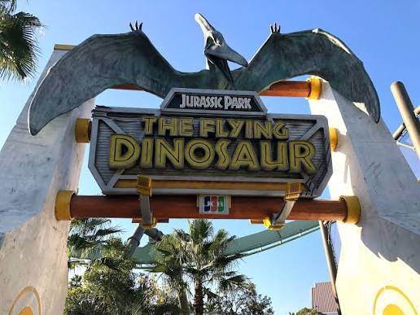
Flying Dinosaur adalah roller coaster menegangkan dan salah satu wahana yang paling seru di USJ. Bagian depan kereta dihiasi dengan dinosaurus, memberikan perasaan seolah-olah kita sedang menunggangi punggung dinosaurus melewati dunia Jurassic Park. Wahana ini kemudian membawa pengunjung ke posisi terbang telungkup dan melaju dengan kecepatan tinggi. Bagian yang paling menegangkan adalah ketika wahana naik tinggi, turun, dan berputar di udara.
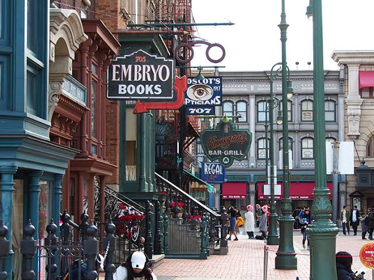
Tempat yang tepat untuk dikunjungi jika Anda ingin merasakan suasana New York, kota mode dan hiburan. Zona ini merekonstruksi jalanan New York dari tahun 1930-an, termasuk Fifth Avenue, salah satu jalan perbelanjaan terkenal di dunia, dan Delancey Street, salah satu jalan utama di Lower East Side. Bersama-sama, mereka menciptakan suasana yang terasa seperti melangkah ke New York tempo dulu. Bangunan-bangunannya direkonstruksi dari era tersebut, dan gang-gangnya penuh dengan hiburan dan pesona klasik.
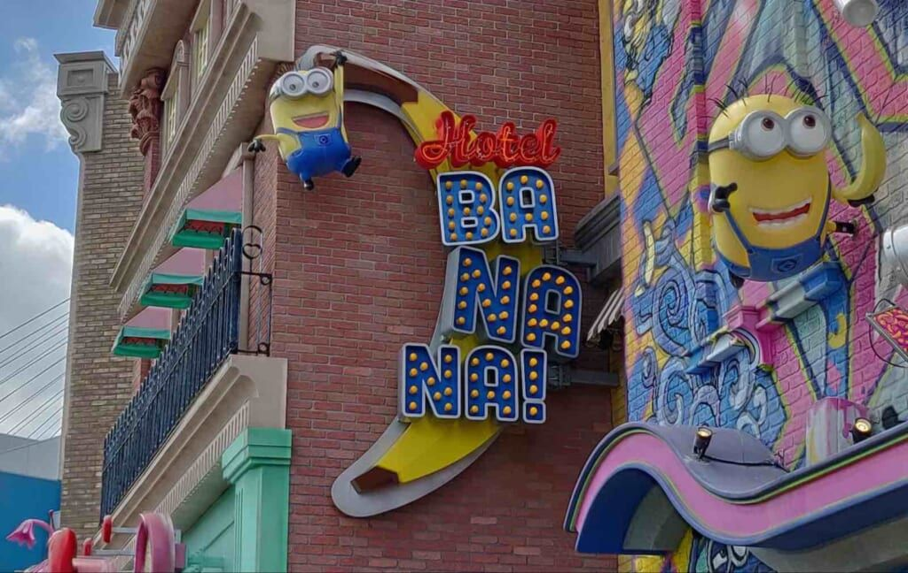
Zona yang wajib dikunjungi para pecinta Minion. Area ini adalah dunia para Minion dari animasi Minion yang terkenal, yang kemudian berlanjut ke franchise film Despicable Me yang dicintai oleh penggemar di seluruh dunia. Yang membuat zona ini istimewa adalah karena ini adalah salah satu area Minion terbesar di dunia. Minion Park menghidupkan kembali suasana lingkungan pinggiran kota yang dikelilingi rumah-rumah, rumah Gru, dan ketiga putri angkatnya Margo, Agnes, dan Edith.
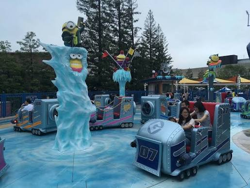
Freeze Ray Sliders adalah atraksi lucu yang mungkin akan disukai anak-anak. Wahana ini terasa seperti permainan mobil tabrak yang menyenangkan. Cara bermainnya sederhana, yaitu dengan menaiki kendaraan wahana dan meluncur melintasi plaza air mancur di tengah taman hijau. Suasana kemudian berubah menjadi lebih seru ketika air mancur mulai meluap.
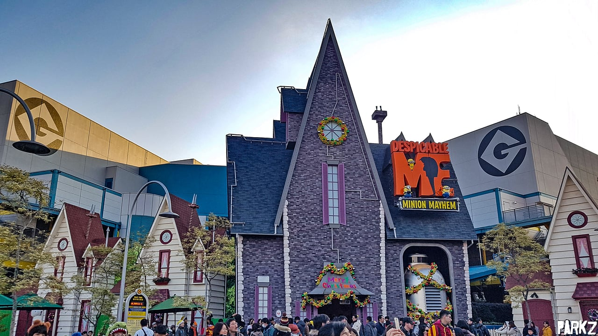
Despicable Me Minion Mayhem merupakan atraksi bergaya 3D yang menampilkan visual, karakter Minion, dan desain adegan yang menarik. Wahana ini membawa pengunjung memasuki kubah raksasa yang berfungsi sebagai layar 3D sehingga terasa seperti benar-benar berada di dalam dunia Minion. Wahana ini didasarkan pada film Despicable Me dan membawa pengunjung dalam proses transformasi menjadi Minion.
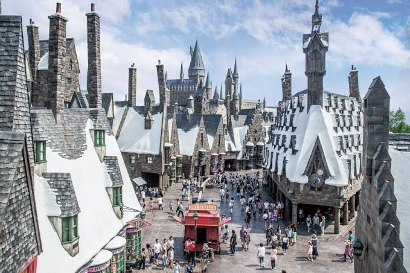
The Wizarding World of Harry Potter merupakan salah satu area yang paling dicintai di Universal Studios Japan. Jika ingin merasakan suasana magis dunia sihir dari film Harry Potter, area ini tidak akan mengecewakan. Pengunjung dapat memasuki dunia Harry dengan Desa Hogsmeade, Hogwarts Express, dan Kastil Hogwarts yang dihidupkan kembali tepat di depan mata. Suasananya terasa sangat realistis dan membuat pengunjung seperti berada di Hogwarts.
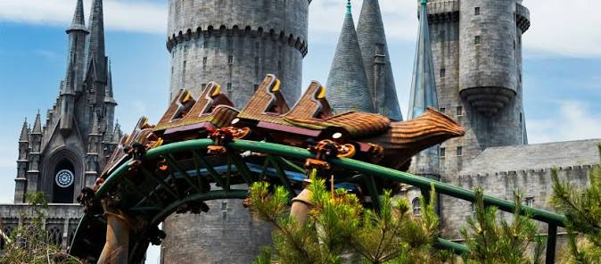
Flight of the Hippogriff™ adalah roller coaster yang lebih lembut di mana kita dapat terbang di udara bersama Hippogriff, makhluk ajaib dari film Harry Potter dengan kepala elang dan tubuh kuda. Wahana ini meluncur melewati Hutan Terlarang dan melewati gubuk Hagrid.
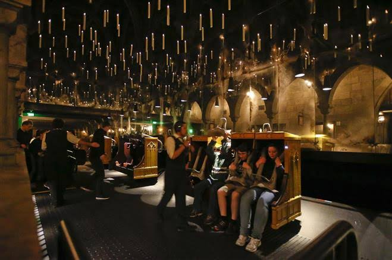
Harry Potter and the Forbidden Journey™ adalah salah satu atraksi unggulan USJ. Pengunjung akan berjalan melalui interior Kastil Hogwarts sebelum menaiki wahana dan menjelajahi dunia magis Hogwarts dengan efek imersif tanpa menggunakan kacamata 3D. Petualangan dimulai dengan mengikuti Hermione menuju observatorium di dalam Hogwarts. Gerakan wahana membuat perjalanan terasa seperti sedang terbang menggunakan sapu ajaib.
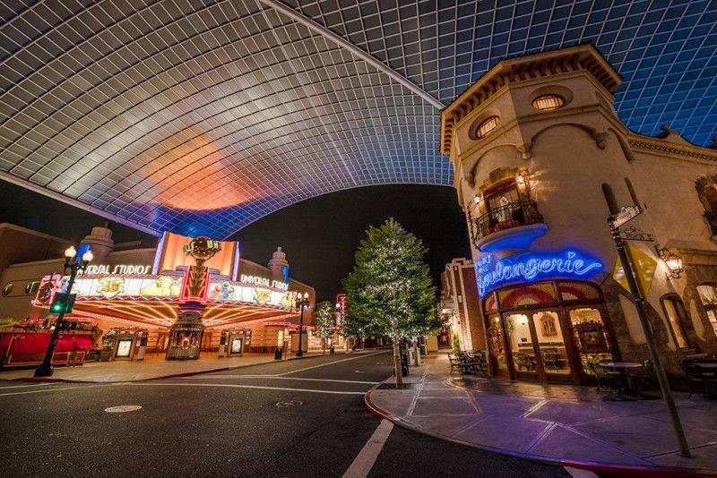
Hollywood Area merupakan zona populer lainnya di Universal Studios Japan. Zona ini merekonstruksi jalanan Hollywood yang ramai di Los Angeles, dengan landmark, tempat wisata, dan toko-toko dari tahun 1930-an yang berjejer untuk menciptakan suasana Hollywood yang cerah dan energik. Di Hollywood Area, wahana yang paling direkomendasikan adalah Hollywood Dream The Ride. Zona ini juga memiliki banyak toko untuk membeli berbagai suvenir.
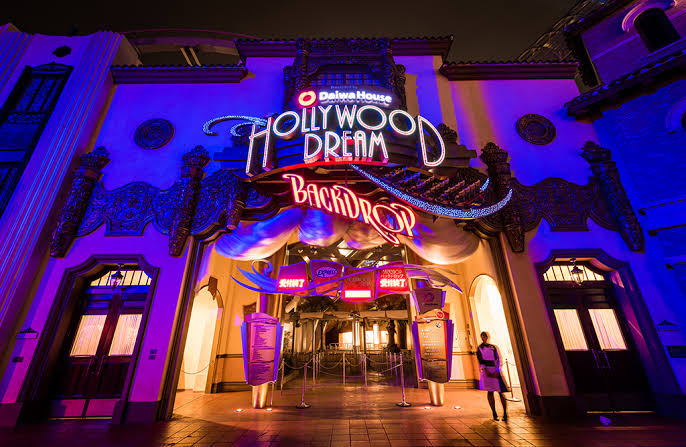
Hollywood Dream The Ride adalah roller coaster yang menyenangkan dengan sistem suara dan pencahayaan yang terintegrasi. Setelah duduk, pengunjung dapat memilih lagu yang ingin didengarkan selama wahana berlangsung. Hollywood Dream The Ride memiliki dua format, yaitu versi biasa yang menghadap ke depan dan versi yang menghadap ke belakang.
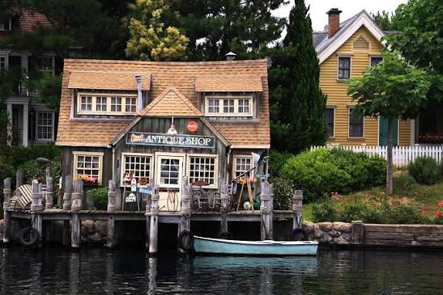
Sebuah desa nelayan kecil di tepi laut diubah menjadi tempat wisata di mana para penjelajah laut dapat menaiki perahu dan berlayar melalui desa yang dikelilingi air. Suasananya didasarkan pada film Jaws, kisah tentang hiu putih raksasa yang menyerang orang-orang di sekitar Pantai Amity. Di dalam Amity Village, USJ merekonstruksi rumah-rumah, dermaga, dan berbagai tempat lainnya dengan cara yang terasa seperti melangkah ke dalam film. Atraksi yang wajib dicoba di sini adalah JAWS.
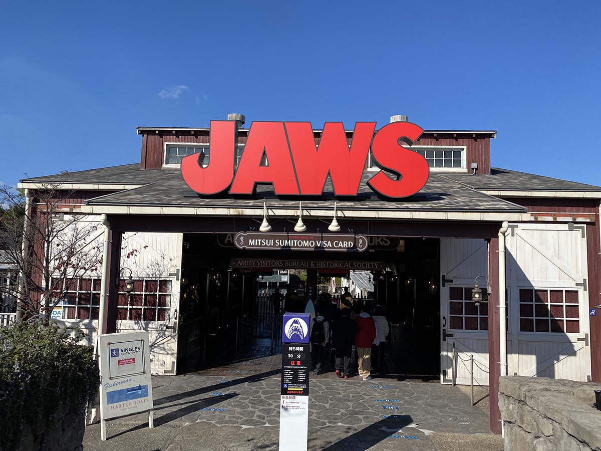
JAWS adalah atraksi perahu yang membawa pengunjung berkeliling di sekitar Amity Village. Wahana ini terinspirasi dari film Jaws dan membuat pengunjung merasakan suasana seperti berada di dalam cerita film tersebut. Selama perjalanan, pengunjung akan diajak menjelajahi desa nelayan dan menghadapi berbagai kejadian yang membuat perjalanan terasa menegangkan.